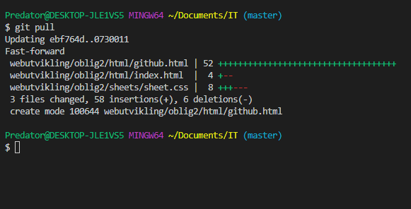

Git/Github
Slik Git fungerer er at det er et system som er gratis å bruke. Funksjonen til Git er at du legger til filene som hører til prosjektet du holder på med. Dette kan være bilder, maler og kodene som blir brukt til prosjektet. Du laster så opp filene til GitHub. GitHub er hovedsentralen til der prosjektet ditt blir lagret. På nettsiden lager du et Repository. Dette blir prosjekt mappen din på nettstedet. Der kan du se hvilke filer som ligger i prosjektet, og hvilke endringer som blir gjort i filene som hører til.
Det som er fint med Git og GitHub er at du nå kan jobbe med andre med den samme koden på forskjellige områder i verden. Når så en laster opp noe nytt til koden må den bekreftes av en annen en for at den skal bli lagt til. Dette gjør at prosjekter ikke bare lenger blir enklere å fullføre, men at en nå kan jobbe med andre verden rundt.
Git har sitt egne kommandospråk. Dette språket er slått sammen av noe av terminalspråket som hører til datamaskinen generelt, og noe den implanterer selv som push, pull, init og fetch. Push funker slik at når denne kommandoen blir satt i gang sender den alle endringene i filene om mappen til Repository-et som ligger på GitHub sine servere. Pull henter alle endringene som har blitt gjort i filene og mappen. Init lagger et tomt Repository på pc-en din lokalt, som du så kan laste opp til GitHub for å kunne jobbe på filene på flere enheter i rundt om i verden. Fetch funker slik at den henter ut alt i mappene. I motsetning til pull som henter endringene så henter fetch alt. Dette vil si at om noe du har skrevet kolliderer med noe noen andre har skrevet sletter den det du skrev og bytter det ut med det de skrev.
Jeg synes at Git og GitHub er utrolig praktisk for utviklere som jobber med kode. Vi kan ha våre egne prosjekter lagret der, og få andre utviklere sine tilbakemeldinger på arbeide vårt. Vi kan også da jobbe med koden på en maskin, og dra og jobbe med den samme koden et helt annet sted.
